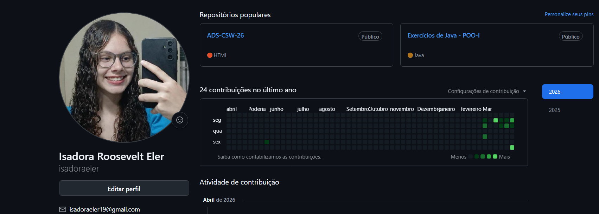

Meu repositório de Aprendizado
O GitHub é onde documento minha evolução como desenvolvedora. Atualmente, meu perfil concentra as atividades práticas das disciplinas de Construção de Software para Web e Programação Orientada a Objetos da UVV.
Clique aqui para acessar meu perfil oficial no GitHubO que você encontrará no meu perfil:
- Exercícios de HTML5/CSS3: Estruturação de páginas semânticas, uso de tabelas, formulários e integração de mídias (vídeo e áudio).
- Projetos Java (NetBeans): Algoritmos de lógica de programação e conceitos iniciais de POO desenvolvidos durante as aulas.
- Documentação de Aula: Repositórios organizados para revisão de conteúdos técnicos.
Meu Portfólio no GitHub
Utilizo o GitHub para versionar meus projetos e hospedar minhas aplicações. Abaixo, você pode acessar o repositório deste projeto e ver como estruturei o código:

Minha Evolução:
Atualmente, acompanho as aulas do Curso em Vídeo (Gustavo Guanabara) para aprofundar meus conhecimentos em semântica HTML5 e boas práticas de estruturação, aplicando esses conceitos aqui na UVV.
Objetivo no GitHub:
Meu objetivo é transformar os projetos EcoRider e LifeXP em repositórios públicos assim que a fase de prototipagem no Figma for concluída e o desenvolvimento do front-end iniciar.
